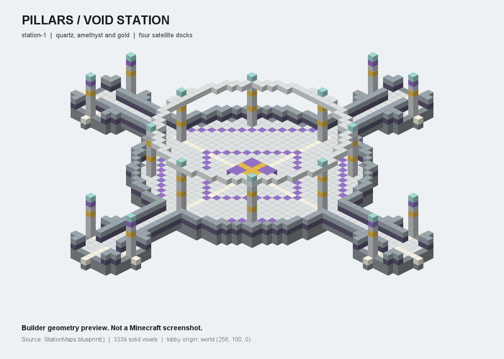

Pillars
Sütun üzerinde başla, gelen rastgele eşyaları kullan ve düşmeden hayatta kal.
Oyuna açık · Hesabına giriş yaptıktan sonra hub'dan katılabilirsin.

Oyuna giriş
- Girişini tamamla. Önce sunucuda hesabına giriş yap ve hub'a ulaş. Bağlantı bilgileri.
- İstasyona geç. Hub'da
/pillarsyaz veya Pillars NPC'sini seç. Pillars menüsü açılır; otomatik olarak maç sırasına girmezsin. - Tura katıl. Menüde katılmayı seç veya
/pillars katilyaz. Aynı anda tek maç oynanır; sıradaki oyuncular katılma sırasına göre alınır. - Geri sayımı bekle. En az 2 oyuncuyla 10 saniyelik geri sayım başlar. Oyuncu sayısı 2'nin altına düşerse geri sayım iptal olur. Bir tur en fazla 8 oyuncu alır.
- Sütununu koru. Gelen eşyalarla hareket alanı oluştur, rakiplerine karşı kendini savun ve boşluğa düşme.
Pillars istasyonu ve haritalar
Pillars istasyonu, maç arenasından ayrı ve PvP'ye kapalıdır. Oyun menüsü, katılma, izleme, kişisel istatistik ve hub'a dönüş seçenekleri burada bulunur. İstasyon merkezi: world: 256, 100, 0.

- Ametist Yörünge
- Kuvars ve ametist halkalı sütun teması.
- Altın Meridyen
- Kuvars ve altın halkalı sütun teması.
İki tema turlar arasında sırayla gelir. İkisinde de aynı dairesel bedrock sütun düzeni kullanılır; farklı arena şekilleri değildir.
Tur ve rastgele eşyalar
- 2–8 oyuncu
- Aynı anda tek maç oynanır. Sıra en fazla 32 oyuncu alır; bir turda 2–8 oyuncu bulunur.
- Her 5 saniyede bir
- Aktif oyunculara güvenli eşya havuzundan bir rastgele eşya verilir. Belirli bir eşya garanti edilmez.
- En fazla 5 dakika
- Tur süresi en fazla 300 saniyedir. Son hayatta kalan oyuncu kazanır. Süre dolması, beraberlik veya zorunlu bitiş galibiyet vermez.
- Seyirci ve sonraki tur
- Sonradan gelenler aktif maça katılmaz.
/pillars izleile gerçek seyirci modunda maçı izle veya/pillars katilile sonraki tura sıraya gir. Elendiğinde de aynı seçenekleri kullanabilirsin. İzlemeye geçtiğinde mevcut sıra kaydın korunur. - Tur arası temizlik
- Maç sonunda arena tamamen temizlenir. Temizlik bitmeden yeni maç başlamaz.
Komutlar, kuyruk ve hub
| Komut | Kullanım |
|---|---|
/pillars | Hub'dan Pillars'a geç ve istasyon menüsünü aç. Otomatik olarak sıraya katılmazsın. |
/pillars katil | Sonraki tur sırasına katıl. Devam eden maça girmezsin. |
/pillars ayril | Sıradan veya izlemeden ayrılıp Pillars istasyonuna dön. Maçta hayattaysan önce maçı bırakırsın. |
/pillars izle | Devam eden maçı seyirci modunda izle. Sonraki tur için sıra kaydın varsa korunur. |
/pillars istatistik | Kendi başladığın tur, galibiyet ve tamamlanan turlardaki eleme sayılarını göster. |
/pillars lobi | Sıradan veya izlemeden ayrılıp ana hub'a dön. Maçta hayattaysan önce maçı bırakırsın. |
İstatistikler yalnızca Pillars'a aittir. Para, rütbe veya ekonomik ödül verilmez; Survival envanteri ve bakiyesi aktarılmaz.
Tur kuralları
- Uçuş, otomatik saldırı ve hareket hileleri kullanma.
- Seyirciyken arenaya veya aktif oyunculara müdahale etme.
- Eşya çoğaltma ya da harita açığı bulursan kullanma; destek ekibine bildir.
- Sohbette diğer oyunculara saygılı ol. Sunucu kuralları burada da geçerlidir.